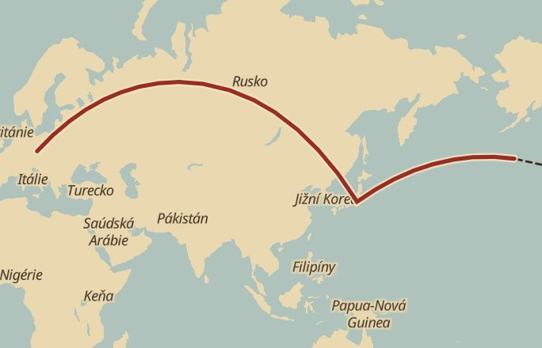

FootAtlas
Načteno z Apple Health
Za život jste ušli
14 200
km
To je z Prahy až do Tokia a ještě 5 100 km dál, přes Tichý oceán.

Praha
Tokio, 9 100 km
S
© OpenStreetMap
Z čeho se číslo skládá
od roku 2016
Ověřeno ze zdravotních dat
12 100 km
Odhad z kroků
2 100 km
Vybrat první výpravu
Sdílet kartu jako obrázek
Data zůstávají na vašem telefonu.